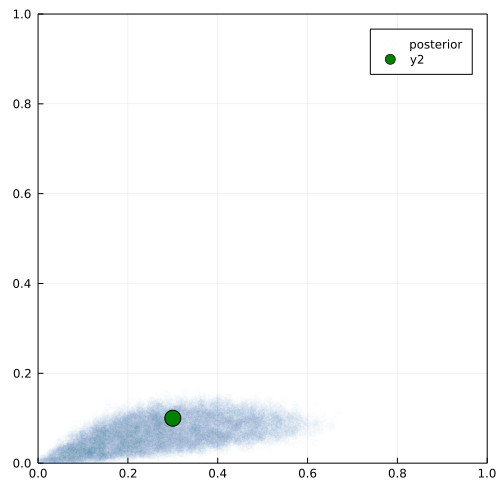

Introduction
Earth’s ecosystems are immensely variable—they are the emergent result of biological processes that exist across spatial, temporal, and organizational scales (Levin 1992). These processes enable, influence and compound on one another, resulting in the immense diversity of functions and forms of life on Earth. There has been a longstanding debate if there is any generality, or better universality, to these processes (Lawton1999?). Answering this question, even in abstract, proves difficult. How can we determine if there is some set of universal rules or mechanisms that underlie systems driven by many factors which interact in nonlinear and probabilistic ways across separate organizational scales? We propose that this problem can be split into two parts: 1) deciding on the best spatial, temporal, and organizational scale at which to model an ecosystem process, and 2) after a particular scale has been chosen, determining the best model at that scale and associated parameters that explain a particular dataset.
The first question is to determine the proper scale to model a given system. Innumerable biological mechanisms have been posited at various spatial, temporal, and organizational scales (fig. 1). How does one decide the best scale at which to model a processes, or at what scale it is best to look for universality?
(LevinsLewontin?) write
The problem for science is to understand the proper domain of explanation of each abstraction rather than become its prisoner.
The second question is, after a given scale is selected, to select the best model from a set of competing models at that scale. This question is primarily implicated with prediction—that is, what model best predicts ecological systems at a particular scale? This has applied need as forecasting is an imperative in ecology. Some scales are more predictable than others.

(Lawton1999?) argues that as an organizational scale, the ecology community is frought with too many “contingencies” in order to find universality. Partially in response to Lawton’s paper, the metacommunity framework (Leibold2003MetCom?) sought to address the inherently spatial nature of metacommunity processes. Vellend (2010) posits four fundamental processes, analogous to evolutionary genetics. (Poisot2015BeySpe?) also notes the importance of variation in traits and abundance. Necessary additional spatial and temporal dimension to community processes. The scales at which we propose mechanisms are subject to selection bias based on the data we can collect—looking for lost keys where the light is better.
The data we collect from ecological systems is inherently noisy. This data contains information produced by a combination of the amalgamation of “true” ecological and evolutionary mechanisms (interacting in unknown ways) compounded by sampling biases.
What is in this paper? We argue that advances in computational resources and methods for likelihood-free inference put us in the place where simulation models can enable us to test more complex interaction mechanisms (Cranmer, Brehmer, and Louppe 2020). We present a conceptual framework for determining the best model from a set of competing simulation models. We then present an example where we fit data from LTER wisconsin fish to both individual-species level and community level simulation models to determine which provides better predictions about occupancy over time. ScientificML (Rackauckas et al. 2020).
A state-space perspective on ecological mechanisms
In order to present the conceptual framework for simulation-based inference, we first need to propose some definitions. This conceptual framework is based around consider the dynamics of a metacommunity system by considering the geometry of how that system changes in state-space.
Dynamical systems is the subfield of mathematics related to systems that change over time. Often by applying a geometric perspective to state-space. What is state space?
What is an ecological mechanism? A mechanism describes how the state of a system changes from one timestep to the next.
A mapping between low dimensional latent/parameter space and information space.
Why is simulation necessary in ecology? They allow us to produce data that encodes explicit mechanism (Crutchfield 1992).
Metacommunity states and mechanisms Within this abstraction, a metacommunity state is a set of measurements for species across locations at a single point in time, which can be represented as a matrix: a grid of measurements where each row corresponds to location and each column to species.
Metacommunity dynamics and tensors Across timepoints, a set of states form trajectories which can be represented as a a tensor.

Using simulation to infer mechanisms in ecology
Simulation models have a long history in ecology. cite some examples.
Still, fitting simulation models to data is difficult. ^what does this mean to someone who doesn’t know what fitting means
No likelihood function. General problem of high-dimensional model, compounded by little data.
What is enabling this now? computational capacity and methods for optimization parameter estimation. More data.

Case study: species versus community level occupancy models
In this section we use data from LTER Minnesota lakes for five fish species. We look at the occupancy dynamics of five species (list species) across NS sites for each year from 198something-200something. We fit two simulation models via likelihood-free inference: first where each species exhibit independent occupancy dynamics, and second where each species has the same c and e value.
Independent Species Model We simulate dynamics where each species i has a colonization probability ci and an extinction probability ei. These are assumed to be a fixed value for each species which does not vary over time.
Unified Model The colonization for each species i is c, extinction probability is e.
Results figure Panel A: AUC-ROC for single species prediction Panel B: AUC-ROC for unified prediction Panel C: Mean error for proportion occupancy for each model.
Assessing fit
Test it on simulated data to see if it works. 
We need to talk about summary statistics
Is proportion more “predictable” than individual occupancy?
Which ones make effective predictions? What models do we use to fit empirical data to simulated (generative adversarial networks, MCMC-ABC methods, etc.)
Caveats on more complex models for this simple example. Refer to up-to-date resources on model fitting an assessment.
Predictive ecology as a scientific epistemology
What scales are inherently more predictable.
Here we propose that simulation models have the potential to infer This results in the question: what are the mechanisms best describe a set of data?
Science is fundamentally a theory of epistemology: a methodology and set of principles to make justified claims about the world. Descriptive claims about the world (the Earth goes around the sun, more species are found near the equator than far from it) are considered justified if they make predictions that agree with observed reality.
The sciences do not try to explain, they hardly even try to interpret, they mainly make models. By a model is meant a mathematical construct which, with the addition of certain verbal interpretations, describes observed phenomena. The justification of such a mathematical construct is solely and precisely that it is expected to work - that is correctly to describe phenomena from a reasonably wide area. Furthermore, it must satisfy certain esthetic criteria - that is, in relation to how much it describes, it must be rather simple.
John Von Neumann
The electron is a theory we use; it is so useful in understanding the way nature works that we can almost call it real.
Richard P. Feynman
The whole idea of searching for “laws” (Lawton) rests on an assumption that there are universal
All models are wrong is not just about statistical models.
In order to determine if a descriptive claim agrees with reality, it must be translated into a quantitative model that makes predictions about things that can be measured. These quantitative models take many forms. A subclass of these models, mechanistic models, represent latent processes that can not be observed or measured, either inherently or due to technological limitations.
Different levels of conceptual abstraction have proven successful in predicting how biological systems change over time.
Still, predicting how ecosystems will change in the future remains a fundamental goal of ecology.
There is variation in the what scales are best for prediction (Brodie et al. 2021), and some forms of dynamics are intrinsically complex enough to avoid effective prediction at all (Pennekamp et al. 2019; Beckage, Gross, and Kauffman 2011; Chen, Angulo, and Liu 2019).
Conclusion
What does is mean for a model to be correct? Take the logistic model, for example. Although logistic growth is observed in many model and to some degree non-model systems, it is hard to say there is some intrinsic truth to this–i.e. that logistic growth is an ecoloigical “law.” The phenomena of population dynamics are the result of individual organisms being born, reproducing, and dying at a lower level of organization, but the logistic model is a useful abstraction under some circumstances.
It is useful the notion that a model represents some “truth” about the world, instead models have vary in their usefulness. predictive accuracy is one measure of this usefulness. The problem is you cannot tell the difference —Hume and the induction problem.
If a simulation makes data the looks like real data, does it represent the “true” world? Does it matter? Newtonian Gravity was “right,” until GR was more right. Different models at different levels of abstract provide varying levels of predictive accuracy. Mechanisms that are incorrect that produce information that shares statistical properties with empirical data can still be useful.
What are the limitations of the utility of mechanistic simulations There are limits to the scope of simulation models. How do we know when they are appropriate, versus a ML/non-mechanistic model? Need for flexible set of tools to do this, setting up the next chapter.